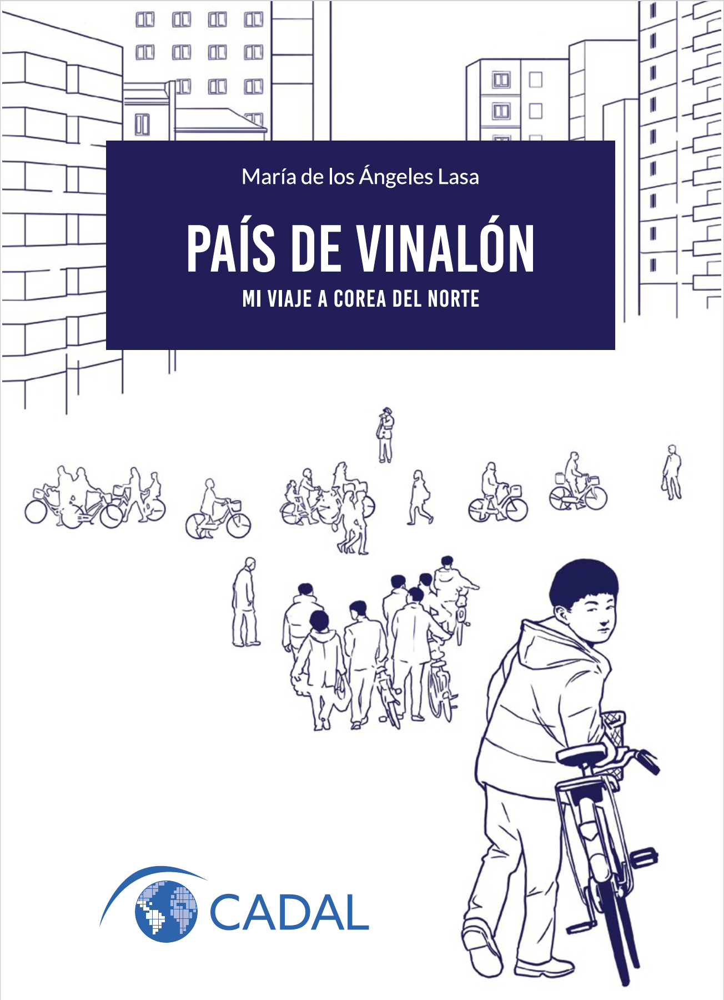

Mi libro
País de vinalón. Mi viaje a Corea del Norte invita a una travesía por el Reino Hermético a través de los ojos de una politóloga y su madre. En un contexto donde los viajes a ese país son escasos y menos de cuatro mil viajeros occidentales se aventuran allí cada año, este relato se destaca por su carácter improbable y la singularidad de su enfoque.
Desde las primeras páginas, el lector se ve sumergido en una narrativa que trasciende las etiquetas convencionales del género «crónica de viaje». A lo largo de nueve capítulos, la autora no solo describe las ciudades visitadas y los eventos que tuvieron lugar en marzo de 2018, sino que también reflexiona sobre temas profundos —el poder, el tiempo, la muerte— que definen la vida al norte del Paralelo 38.
Enriqueciendo la narrativa, el humor ácido y perspicaz es un recurso recurrente que aligera la tensión y aporta una capa de profundidad adicional al relato. Además, cerca de cuarenta fotografías tomadas por la autora acompañan las palabras, brindando una experiencia visual auténtica y atractiva que complementa la historia.
País de vinalón es una invitación a repensar el propio mundo, a cuestionar percepciones preconcebidas y a reflexionar sobre la condición humana en contextos de opresión.
País de vinalón es una edición del Centro para la Apertura y el Desarrollo de América Latina (CADAL). Para acceder a su lectura libre y gratuita, clic aquí.